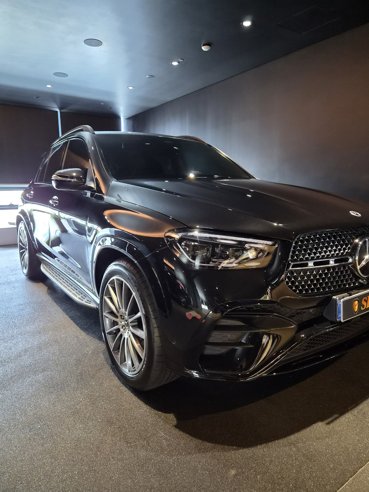
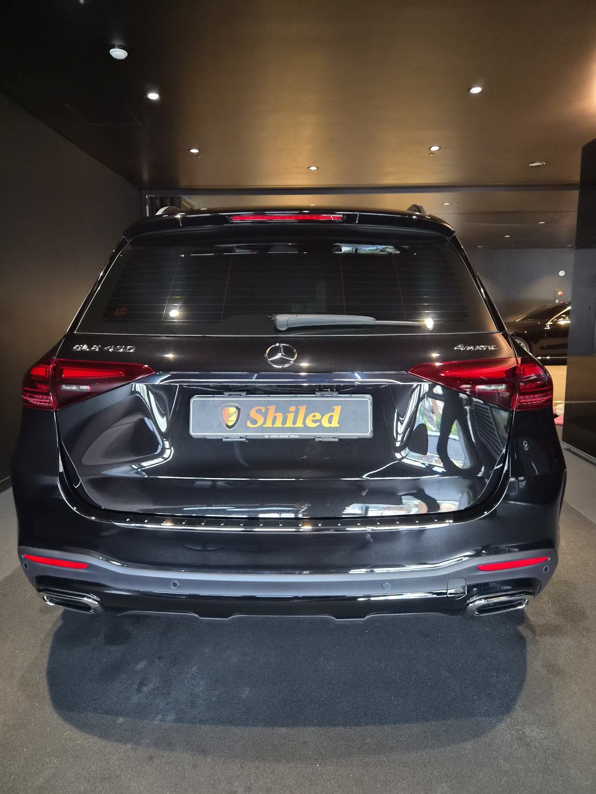
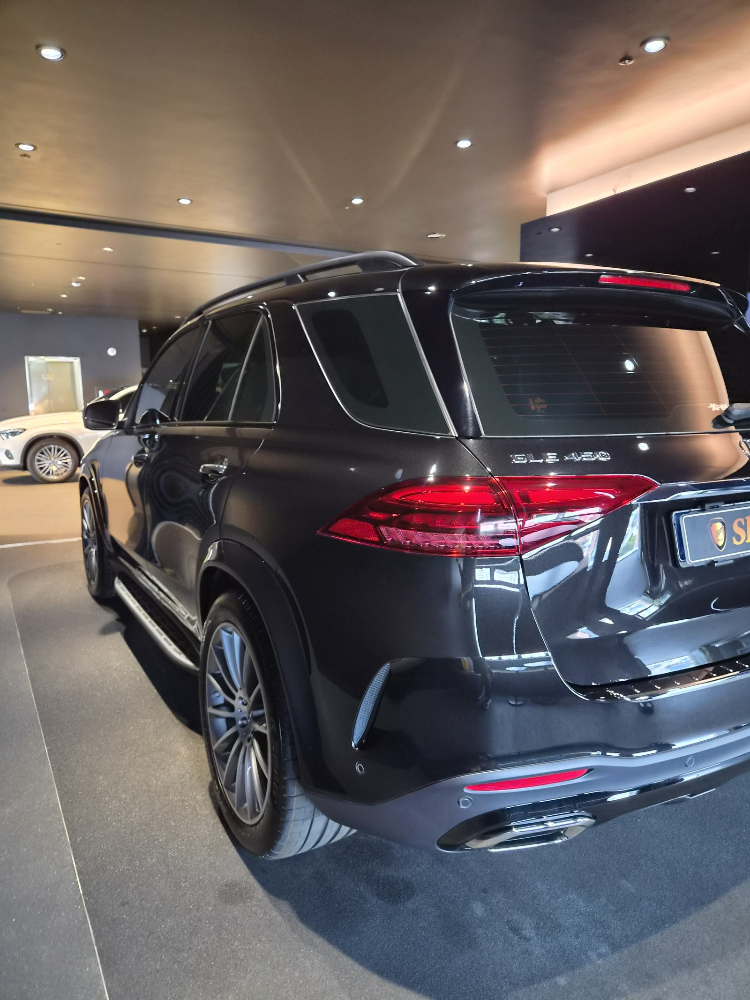
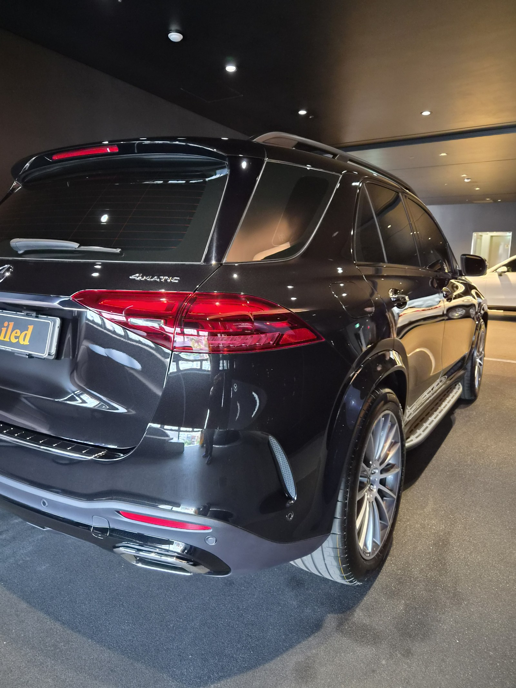
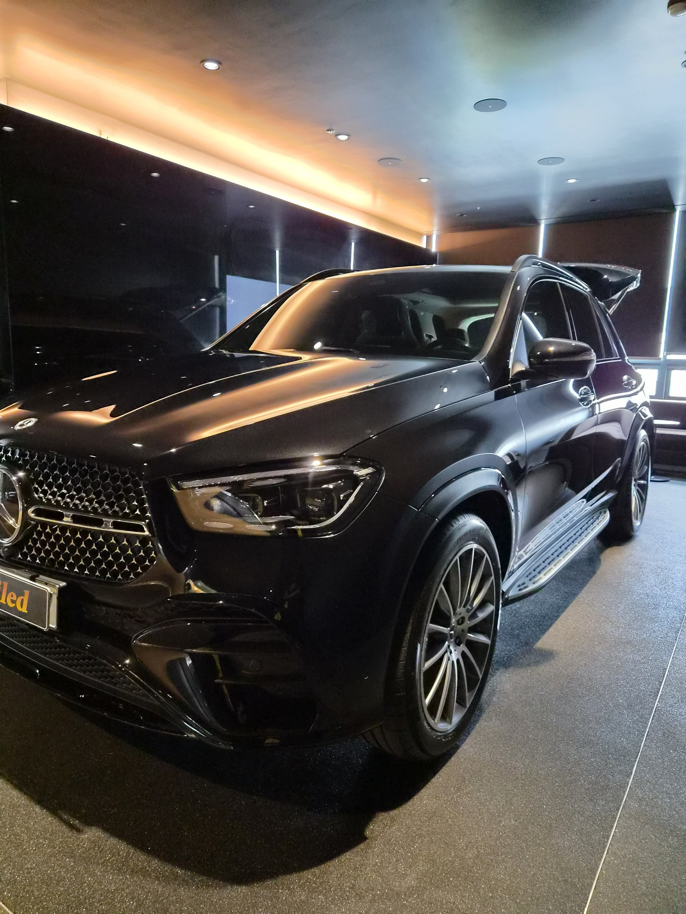
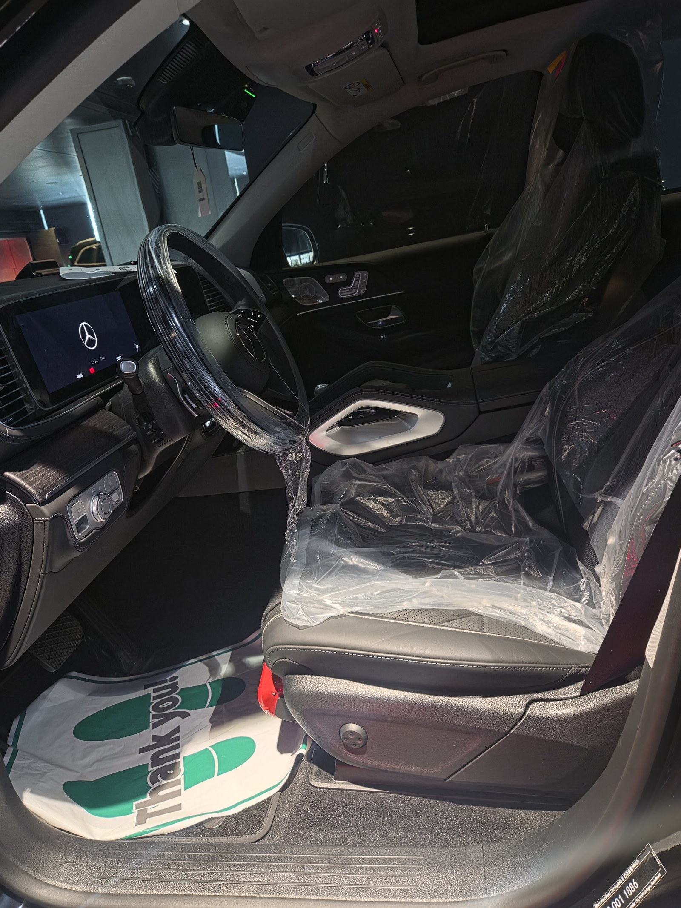

벤츠 GLE450 검정입니다. 아직 출고 전, 새 차입니다.
부산 유리막코팅으로 이 차는 출고 전 G-TOP으로 진행했습니다.

새 차인데 왜 출고 전에 코팅을 하나
도장면이 가장 깨끗할 때 올리는 코팅이 가장 오래갑니다.
출고 후에는 운행과 세차로 미세한 잔기스와 오염이 쌓이기 시작합니다. 그게 쌓이기 전, 신차 상태 그대로일 때 코팅막을 입혀두는 겁니다. 쉴드광택은 부산 유리막코팅을 다수 진행하는 벤츠 남천점 협력업체입니다.

검정 대형 SUV에 왜 G-TOP인가
G-TOP은 발수·방오성을 끌어올리는 코팅입니다.
GLE450처럼 도로 위 오염을 많이 맞는 대형 SUV는 빗물과 먼지가 표면에 잘 맺히지 않고 흘러내려야 관리가 편해집니다. G-TOP을 올리면 물방울이 매끈하게 흘러내리며 오염이 쌓이는 속도 자체가 느려집니다. 코팅제는 대표가 화학공학 전공으로 직접 개발·제조한 제품입니다.

기술자의 팁
신차라고 바로 코팅을 올리지 않습니다. 운송·보관 중 묻은 미세 오염을 디테일링 세차와 탈지로 걷어낸 뒤에 올립니다. 깨끗한 바탕 위에 올려야 코팅이 제대로 밀착합니다.


외부만이 아니라 안까지
출고 전 차량은 안팎 컨디션을 함께 정리합니다.
실내는 아직 시트에 보호 커버가 씌워진 신차 그대로입니다. 외부 도장은 G-TOP으로 발수력을 잡고, 인도까지 깨끗한 상태로 관리합니다.

자주 묻는 질문
Q. 새 차인데 왜 출고 전에 코팅을 하나요?
A. 도장면이 가장 깨끗할 때 올리는 코팅이 가장 오래갑니다. 운행·세차로 잔기스와 오염이 쌓이기 전, 신차 상태 그대로일 때 코팅막을 입혀두면 처음 컨디션을 더 오래 지킵니다.
Q. 검정 대형 SUV에는 왜 G-TOP인가요?
A. 이 차는 G-TOP으로 진행했습니다. G-TOP은 발수·방오성을 끌어올리는 코팅입니다. 도로 위 오염을 많이 맞는 대형 SUV일수록 물방울이 매끈하게 흘러내려 관리 부담이 줄어듭니다.
Q. 유리막코팅은 어디서 받나요?
A. 쉴드광택은 벤츠 남천점 협력업체로, 부산 벤츠 신차 출고 전 코팅을 다수 진행하고 있습니다. 대표가 코팅제를 직접 개발·제조하고 직접 시공까지 책임집니다.
Q. 쉴드광택 위치와 예약은 어떻게 하나요?
A. 부산 남구 유엔로220 1F 쉴드광택입니다. 예약·상담은 010-3384-1850, 대표 최한중이 직접 상담하고 책임 시공합니다.
새 차일수록 시작점이 다릅니다. 가장 깨끗할 때 입혀두십시오.
제품을 직접 만드는 사람이 직접 시공합니다.
유리막코팅을 고민 중이시면 편하게 연락 주십시오.
어떤 차를 타냐보다 어떻게 타냐가 중요합니다~!
시공 중에는 전화를 받지 못할 때가 많습니다.
카카오톡으로 차종과 원하시는 시공을 남겨주시면 확인 후 답변드립니다.
쉴드광택 · 부산 남구 유엔로220 1F · 대표 최한중